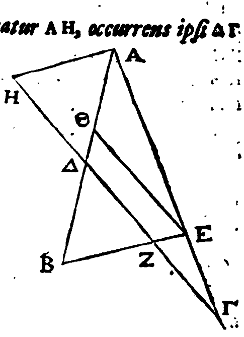

Lemma I — The Planar Menelaus Transversal Theorem¶
Menelai Alexandrini Sphaericorum Lib. III Lemma I (Halley 1758, p. 83)


Enunciation (Halley 1758, p. 83)
If to two straight lines \(\mathrm{AB}, \mathrm{A\Gamma}\) meeting at \(\mathrm{A}\) there be drawn two other straight lines \(\mathrm{\Gamma\Delta}, \mathrm{BE}\) intersecting one another at point \(\mathrm{Z}\): I say that straight line \(\mathrm{AE}\) is to \(\mathrm{E\Gamma}\) in the ratio compounded of the ratio \(\mathrm{\Delta Z}\) to \(\mathrm{Z\Gamma}\) and the ratio \(\mathrm{BA}\) to \(\mathrm{B\Delta}\).*
For through \(\mathrm{A}\) let \(\mathrm{AH}\) be drawn parallel to \(\mathrm{BE}\), meeting \(\mathrm{\Delta\Gamma}\) produced at \(\mathrm{H}\). Now since \(\mathrm{AH}\) is parallel to \(\mathrm{EZ}\), as \(\mathrm{AE}\) is to \(\mathrm{E\Gamma}\), so is \(\mathrm{HZ}\) to \(\mathrm{Z\Gamma}\). And taking the straight line \(\mathrm{Z\Delta}\) as a mean term, the ratio \(\mathrm{HZ}\) to \(\mathrm{Z\Gamma}\) shall be compounded of the ratio which \(\mathrm{HZ}\) has to \(\mathrm{Z\Delta}\) and of that which \(\mathrm{Z\Delta}\) has to \(\mathrm{Z\Gamma}\). But by reason of the parallels \(\mathrm{AH}, \mathrm{BZ}\), as \(\mathrm{ZH}\) is to \(\mathrm{Z\Delta}\), so is \(\mathrm{BA}\) to \(\mathrm{B\Delta}\): therefore the ratio \(\mathrm{HZ}\) to \(\mathrm{Z\Gamma}\), that is, \(\mathrm{AE}\) to \(\mathrm{E\Gamma}\), is compounded of the ratio which \(\mathrm{BA}\) has to \(\mathrm{B\Delta}\) and of that which \(\mathrm{\Delta Z}\) has to \(\mathrm{Z\Gamma}\):
With the same things posited, I say also that \(\mathrm{\Gamma A}\) is to \(\mathrm{AE}\) in the ratio compounded of the ratio which \(\mathrm{\Gamma\Delta}\) has to \(\mathrm{\Delta Z}\) and of that which \(\mathrm{ZB}\) has to \(\mathrm{BE}\).
Let \(\mathrm{E\Theta}\) be drawn parallel to \(\mathrm{\Gamma\Delta}\), and by reason of the same parallels, as \(\mathrm{\Gamma A}\) is to \(\mathrm{AE}\), so is \(\mathrm{\Gamma\Delta}\) to \(\mathrm{E\Theta}\); let \(\mathrm{\Delta Z}\) be taken as a mean term, and the ratio \(\mathrm{\Gamma A}\) to \(\mathrm{E\Theta}\) shall be compounded of that which \(\mathrm{\Gamma\Delta}\) has to \(\mathrm{\Delta Z}\) and of that which \(\mathrm{\Delta Z}\) has to \(\mathrm{E\Theta}\). But by reason of the parallels \(\mathrm{\Delta Z}, \mathrm{\Theta E}\), \(\mathrm{\Delta Z}\) is to \(\mathrm{E\Theta}\) as \(\mathrm{ZB}\) is to \(\mathrm{BE}\): therefore the ratio \(\mathrm{\Gamma A}\) to \(\mathrm{E\Theta}\), that is, \(\mathrm{\Gamma A}\) to \(\mathrm{AE}\), is compounded of the ratio \(\mathrm{\Gamma\Delta}\) to \(\mathrm{\Delta Z}\) and the ratio \(\mathrm{ZB}\) to \(\mathrm{BE}\). Quod erat demonstrandum.